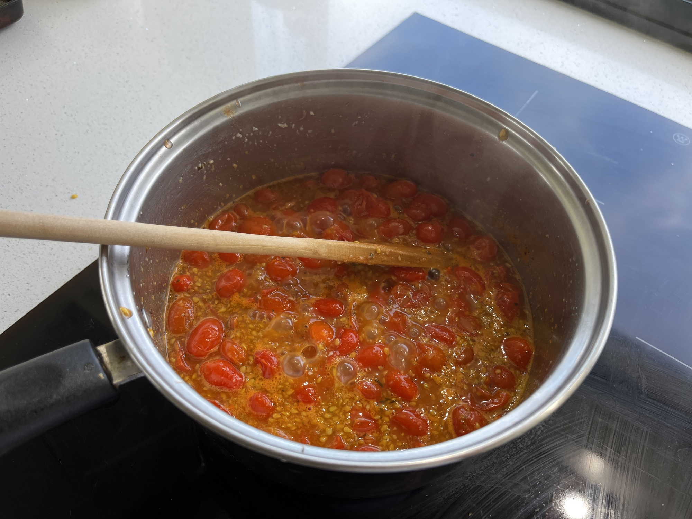

Pizza Sauce
 Source
Source Meat
Meat

sometomatoes
Mash or blend tomatoes in a saucepan
somebrown sugar
Add a little bit of brown sugar
somesalt,
Add salt, @oregano and @thyme
somegarlic
Add minced garlic
Stir on medium heat until thickened